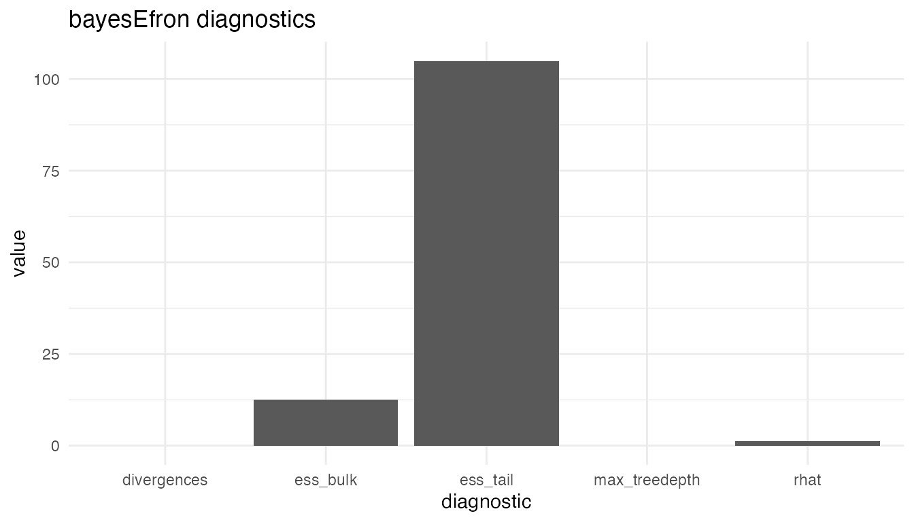

A5 · Diagnostics in practice
Source:vignettes/a5-diagnostics-in-practice.Rmd
a5-diagnostics-in-practice.RmdWhy diagnostics matter
bayesEfron fits its random-effects deconvolution model
with Stan’s No-U-Turn Sampler (NUTS). Every posterior summary the
package surfaces — the mean of
,
the per-site intervals on
,
the marginal log-likelihood — is a Monte Carlo estimate that depends on
the sampler having explored the posterior well enough for those
estimates to be trustworthy. A pathological sampler can produce
summaries that look reasonable in tabular form but reflect a chain that
has not converged, has explored only one mode, or has lost numerical
resolution in high-curvature regions.
Sampler-health diagnostics are the standard mechanism for ruling
those failures out. The post-processor records the conventional NUTS
diagnostics on every fit, validates them against a fixed schema, and
surfaces them through a dedicated producer (diagnose()) and
S3 methods. This vignette walks through the schema field by field,
anchors each field to its conventional release threshold, and shows what
flagged diagnostics look like by reading them off the cached smoke
fixture, which is engineered to fail the thresholds.
The diagnose() producer
diagnose() is the structured producer for the
bef_diagnostic class. It does not re-process draws or run
new computations; it surfaces the diagnostic payload that the fit
pipeline stored as attributes of fit$metadata, behind a
stable access path.
The returned object is a list of eleven fields with a single S3 class and is validated internally before return.
str(diag, max.level = 1)
#> List of 11
#> $ rhat : num 1.2
#> $ ess_bulk : num 12.5
#> $ ess_tail : num 105
#> $ divergences : num 0
#> $ max_treedepth : num 0
#> $ effective_params_summary :List of 5
#> $ model_family : chr "RE"
#> $ stan_file_sha256 : chr "57d1f55c8ccd721800193e61eb247f315be3afd401a19f58a51f84c103ceca3e"
#> $ runtime_seconds : num 0.291
#> $ diagnostic_skipped : chr(0)
#> $ sampler_diagnostics_failed: chr(0)
#> - attr(*, "class")= chr "bef_diagnostic"The sampler-health fields (rhat, ess_bulk,
ess_tail, divergences,
max_treedepth) are numeric vectors; on a multi-chain real
fit they carry per-parameter or per-chain entries. The model-quality
field effective_params_summary is a posterior summary list.
The provenance fields record what was sampled and how long it took. The
two bookkeeping flags (diagnostic_skipped,
sampler_diagnostics_failed) name diagnostics the
post-processor intentionally did not compute or could not return, and
are empty character vectors on a clean fit.
The producer-versus-method distinction matters for orientation.
diagnose() is the producer: a function that emits a
bef_diagnostic object. summary(),
print(), and format() are S3 methods that
consume that object and emit human-readable views. The graphical
companion view is reached through
plot(fit, type = "diagnostic").
Each diagnostic field
The five sampler-health fields divide into three conceptual groups:
convergence (rhat), mixing (ess_bulk,
ess_tail), and sampler pathology (divergences,
max_treedepth). The release thresholds below are the
conventional ones used in the Stan documentation and reflected in the
package’s verification ledger.
rhat
rhat is the per-parameter
statistic (in the rank-normalized form recommended for current Stan
workflows). It compares the between-chain variance to the within-chain
variance for each monitored parameter; values close to
indicate that the chains have converged to a common stationary
distribution. The conventional release threshold is
;
the
–
band is a warning, above
is a blocker.
When
exceeds the threshold the conventional remediation is to extend warmup,
increase the sampling count, or investigate whether the chains have
settled into different modes via trace plots
(e.g. posterior::as_draws(fit) and
bayesplot::mcmc_trace()). For the cached smoke fixture:
diag$rhat
#> [1] 1.203085The value is well above the
threshold. The fixture was sampled with a single chain and a very small
iteration count (chains = 1,
iter_warmup = 150, iter_sampling = 100), which
makes the smoke-scale
a deliberate teaching example rather than an indictment of the
model.
ess_bulk
ess_bulk is the per-parameter bulk effective sample size
— the Monte Carlo information available for estimating posterior means.
A bulk ESS of
means the autocorrelated draws carry as much information as
independent draws would. The conventional release threshold is
.
When bulk ESS falls below the threshold the conventional remediation is to extend sampling. Persistent low bulk ESS for a specific parameter is a sign of a model identifiability problem rather than a sampler-tuning issue. For the cached fixture:
diag$ess_bulk
#> [1] 12.53436The value is two orders of magnitude below the threshold, again because of the smoke-scale iteration count.
ess_tail
ess_tail is the per-parameter tail effective sample
size, the ESS relevant for the credible-interval endpoints that
confint() returns. The conventional release threshold
mirrors the bulk threshold:
.
Tail ESS is typically smaller than bulk ESS, because tail quantiles depend on rare excursions in the tails of the chain. A passing bulk ESS paired with a failing tail ESS indicates that posterior means are stable but credible intervals are not. For the cached fixture:
diag$ess_tail
#> [1] 104.9594The value is below the threshold but well above the bulk ESS, which is the expected ordering when both fail at smoke scale.
divergences
divergences counts the number of divergent transitions
per chain — the sampler’s record of numerical failure where the leapfrog
integrator’s step size is too large for the local posterior curvature.
Divergences bias posterior summaries: the affected draws cluster in
regions the sampler could not traverse faithfully, and discarding them
after the fact does not restore unbiasedness. The conventional release
threshold is
:
a clean fit has no divergent transitions.
When divergences appear the conventional remediation is to raise the
adapt_delta control argument (which lowers the adapted step
size), reparameterise the model, or both. For the cached fixture:
diag$divergences
#> [1] 0The fixture’s divergence count is zero, so this is the one diagnostic that does not flag — the smoke-scale problem the fixture exercises is convergence and mixing, not sampler pathology.
max_treedepth
max_treedepth counts the number of times the NUTS
tree-building algorithm hit its maximum depth without resolving a
U-turn. This is an efficiency warning, not a correctness one: the
transition is still valid, but the sampler is doing more work than
expected and may be missing a faster exploration path. The conventional
release threshold is
,
with a small nonzero count tolerable when the other diagnostics
pass.
When max-treedepth hits appear the conventional remediation is to
raise the max_treedepth control argument or reparameterise
to reduce posterior correlation. For the cached fixture:
diag$max_treedepth
#> [1] 0The fixture’s count is zero, matching the divergence result.
summary(diag) — extreme-value view
summary() on a bef_diagnostic is a triage
view. It compresses each sampler-health field to its worst-case value:
rhat to its maximum, ess_bulk and
ess_tail to their minima, and divergences and
max_treedepth to their totals across chains.
summary(diag)
#> $rhat
#> $rhat$value
#> [1] 1.203085
#>
#> $rhat$index
#> [1] 1
#>
#>
#> $ess_bulk
#> $ess_bulk$value
#> [1] 12.53436
#>
#> $ess_bulk$index
#> [1] 1
#>
#>
#> $ess_tail
#> $ess_tail$value
#> [1] 104.9594
#>
#> $ess_tail$index
#> [1] 1
#>
#>
#> $divergences
#> [1] 0
#>
#> $max_treedepth
#> [1] 0
#>
#> $effective_params
#> $effective_params$mean
#> [1] 0.3753726
#>
#> $effective_params$sd
#> [1] 0.3722022
#>
#> $effective_params$q5
#> [1] 0.07486369
#>
#> $effective_params$q50
#> [1] 0.3212756
#>
#> $effective_params$q95
#> [1] 0.7056425
#>
#>
#> $model_family
#> [1] "RE"
#>
#> $stan_file_sha256
#> [1] "57d1f55c8ccd721800193e61eb247f315be3afd401a19f58a51f84c103ceca3e"
#>
#> $runtime_seconds
#> [1] 0.2905509
#>
#> $diagnostic_skipped
#> character(0)
#>
#> $sampler_diagnostics_failed
#> character(0)The compressed view is what to scan first on a real fit: if the
worst-case
is below
,
the minimum bulk and tail ESS are above
,
and the total divergence and max-treedepth counts are zero, the fit
passes the headline checks. The full per-parameter or per-chain vectors
remain on the bef_diagnostic object itself for deeper
investigation when the headline fails. The view also carries the
unchanged model-quality summaries and the two bookkeeping flags, so a
single summary() call gives the analyst everything needed
for a release decision.
plot(fit, type = "diagnostic")
The graphical companion view consumes the same payload through
plot(fit, type = "diagnostic"). It shows the five
sampler-health metrics as a bar chart, with the worst-case value for
each metric on the vertical axis. The view is meant for quick visual
triage during interactive work, not as a replacement for reading the
numeric fields.
The function uses a ggplot2 backend when
ggplot2 is installed and the environment variable
BAYESEFRON_NO_GGPLOT2 is not exactly "1", and
a base-graphics backend otherwise. The ggplot2 backend
returns a ggplot2::ggplot object that can be extended with
+ theme() and + labs(); the base backend draws
on the active graphics device and returns
invisible(NULL).
plot(fit, type = "diagnostic")
In the fixture’s bar chart the bulk and tail ESS bars dwarf the others on the value axis — the visual signature of a smoke-scale fit, where ESS is the information-bearing diagnostic and the one that scales fastest with iteration count.
What the cached fixture flags reveal
The cached fixture was produced by the call documented in A1: one chain, warmup iterations, sampling iterations. These are far below what NUTS needs to converge on a deconvolution problem of this shape. The fixture exists to keep the package’s vignettes and examples free of a CmdStan dependency at render time, and was sized for fast-loading rather than for inferential quality.
The three sampler-health failures the fixture exhibits are therefore expected and informative:
-
rhat, well above the threshold. -
ess_bulk, two orders of magnitude below . -
ess_tail, well below .
The two pathology counters (divergences and
max_treedepth) are both zero: the sampler is healthy in the
local-geometry sense, but the chain is too short and too solitary to
support convergence or mixing conclusions.
For substantive analyses the package’s verification ledger (documented in M6) treats any one of the three failures the fixture exhibits as a release blocker. The recommended response is to re-fit with the package’s default configuration (four chains, warmup, sampling) and re-check; persistent failures after that are model-diagnostic rather than sampler-diagnostic and call for a closer look at the data, the grid recipe (see A4), or the spline degrees of freedom .
A diagnostic checklist
The bullets below condense the conventional thresholds into a release checklist. A fit that ticks every box can be released without further investigation; a fit that fails any box requires the corresponding remediation before its summaries are acted on.
What’s next
-
A6 · Plotting
bayesEfronfits — the four-view plot surface, including the caterpillar plot used in A1, the prior- density, the sensitivity overlay, and the diagnostic bar chart shown above. - M5 · The Stan model — the methodological vignette documenting the locked Stan source, the log-spline-deconvolution likelihood, and the parameterisation choices that determine the sampler’s geometry.
- M6 · Verification and calibration — the verification ledger that fixes the release thresholds used in the checklist above and documents the calibration runs the package’s reference fits were validated against.